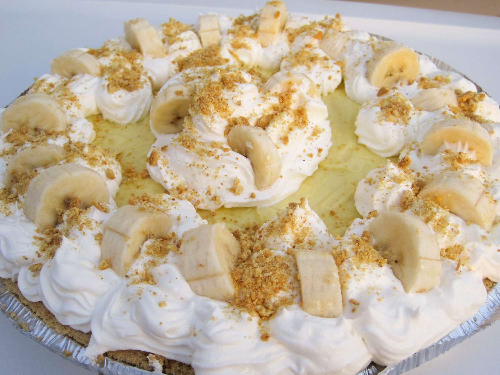

Banana Cream Pie with Pudding

Description
This no-bake banana cream pie recipe
is made with instant pudding for quick and easy results without turning on the stove.
Ingredients
- 1 (9 inch) baked pie crust
- 3 medium bananas, divided
- 2 ½ cups cold milk
- 2 (3.5 ounce) packages instant vanilla pudding mix
- 2 cups frozen whipped topping, thawed, divided
Steps
- Slice two bananas; arrange banana slices in a single
layer to cover bottom of pie crust.
- Pour cold milk into a medium bowl. Add pudding mix and whisk until thoroughly combined. Fold in 1/2
cup whipped topping; pour into crust over bananas. Refrigerate until firm,
at least 3 hours.
- When ready to serve, spread remaining whipped topping over pie.
Slice remaining banana and arrange over topping.